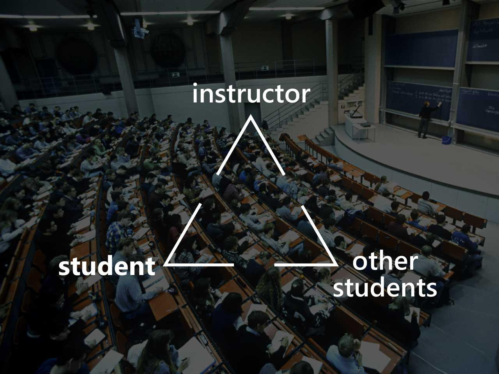
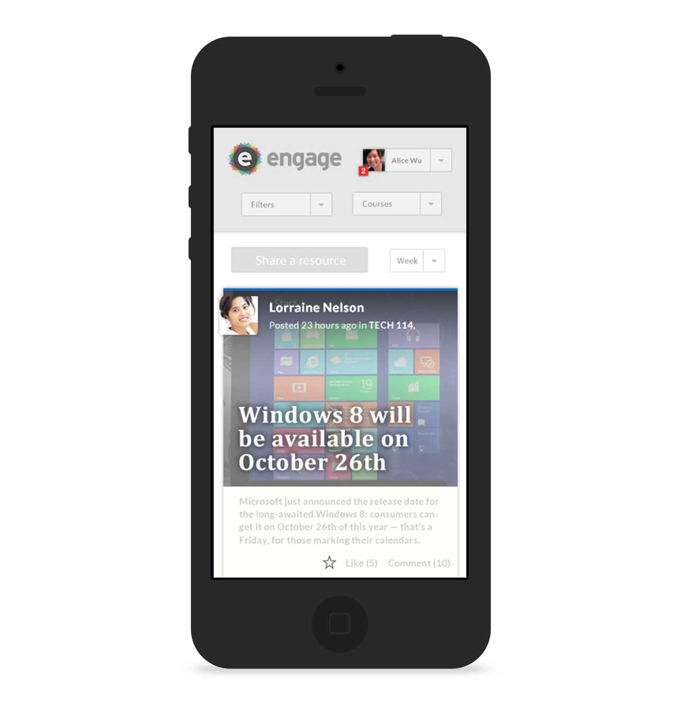

SFU engage was built during the Semester of Innovation (Summer 2012), which brought interaction design, computer science, and business students together to build mobile apps for educational use to pitch to stakeholders as the final deliverable.
To start, we needed to understand how today's students learn, study, and collaborate using their various mobile devices. We asked students of different majors from various local post-secondary schools to participate in a series of activities to help us understand the audience we were designing for.
Above are the quantitative results from surveys that we distributed during the workshop. From further discussion within the research team and analysis of our data, we determined two facts about the audience we were targeting, in which we used for the foundation of our app–
First, in traditional lectures, there was a gap in communication between the instructor and student and between a student with their classmates. Second, various social media outlets were being utilized to supplement course materials and to connect with classmates. To keep context in mind, these results came about as an intriguing fact to us as the value of social media networks was just beginning to expand beyond the "social" aspect.
We built a set of constraints based on these findings to establish the purpose of our app – we needed to (1) centralize the learning that happens outside of lecture and make it accessible, (2) bring focus and control, considering how distracting the internet can be, and (3) encourage dialogue between students and instructor.
This roughness was then translated into wireframes and mockups (see examples above and below). We thought the most effective system would allow users to upload articles, documents and other media, and have them be readable, accessible, and organized within the app itself, while providing a space that could facilitate dialogue as well.
Our prototype is currently offline, but it's available on Github. This is how it works– (1) Upload a document file or post a link, (2) share + discuss with peers, (3) read, like + comment on other's posts, and (4) repeat!
Workshop Host + Coordinator, Research Compilation + Analysis, UX/UI Designer
Interaction Design, Workshop Facilitation, Interviewing, Research Data Analysis, Sketching, Wireframing, Collaboration with Developers + Business People
Stanley Lai, Justin Ma, Billy So, Brad Sutherland, Norman Tam, Aldrich Tan
Farzin Faghihi, Donald Lee, Hedy Liu, Mark Ni, Norman Tam, Aldrich Tan, Catherine Tan